TASKBAR HERO · 플레이 가이드
화면 아래 얇은 띠에서 전투가 저절로 진행되는 방치형 RPG예요. 처음 하시는 분도 이 문서만 읽으면 무엇을 누르면 되는지 다 알 수 있어요.
01
설치 과정은 없어요. 받은 폴더 안에서 실행 파일 하나만 누르면 바로 시작됩니다.
받은 압축 파일의 압축을 풀어요.
풀린 폴더 안의 Game 폴더로 들어가요.
com2us-taskbar-hero-client.exe 를 두 번 클릭하면 게임이 시작돼요.
com2us-taskbar-hero-client.exe 파일만 따로 꺼내서 옮기면 실행되지 않아요.
같은 Game 폴더 안에 있는 다른 파일·폴더가 함께 있어야 하니, 폴더째로 옮겨 주세요.
02
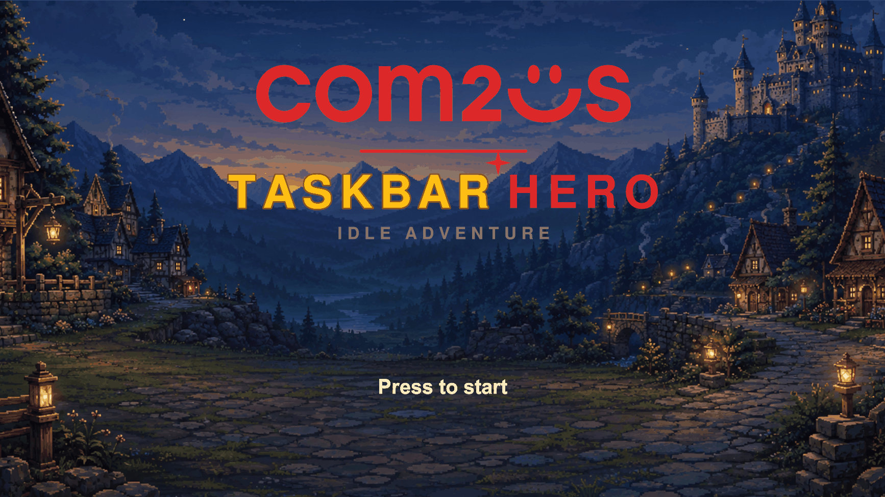
파티(최대 3명)가 스스로 전진하고, 사거리에 들어온 적을 알아서 공격해요. 스킬도 대기시간이 차면 저절로 나가요.
조작 대신 무엇을 입히고, 무엇을 키우고, 누구를 넣을지를 고르면 돼요. 그게 이 게임의 재미예요.
게임 창은 작업표시줄 위에 얇게 붙고, 전투는 가운데 좁은 띠에서 벌어져요. 아래 메뉴는 항상 떠 있어서 언제든 바로 누를 수 있어요.
게임을 끄고 있던 동안의 성과가 다시 접속할 때 오프라인 보상으로 정산돼 들어와요.
그래서 이 게임은 붙잡고 하는 게임이 아니에요. 다른 일을 하다가 눈길이 갈 때 잠깐 들여다보고, 장비를 갈아 끼우거나 스킬을 하나 올려 주면 충분해요.
03
타이틀 화면을 클릭해요. 어디를 눌러도 시작돼요.
로그인 또는 회원가입을 해요. 한 번 로그인하면 다음부터는 자동으로 넘어가요.
함께할 캐릭터를 만들어요. 모닥불 앞에 서 있는 네 직업 중 하나를 고르고, 성별과 이름을 정하면 끝이에요.
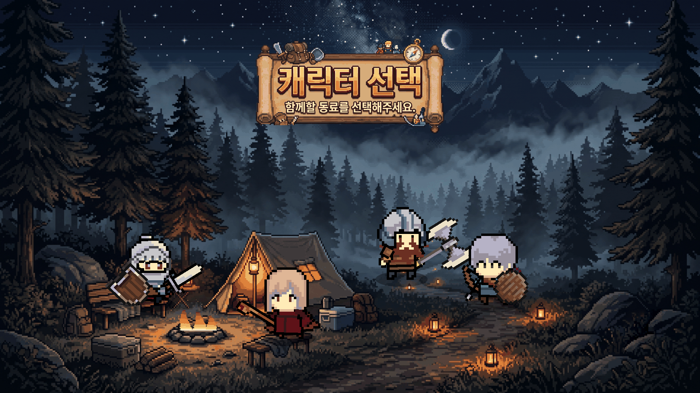
캐릭터는 나중에 [편성] → [+ 캐릭터 추가]로 더 만들 수 있어요. 직업마다 한 명씩 만들 수 있고, 추가로 만들 때는 골드가 들어요.
기사로 시작하는 게 가장 편해요. 혼자서도 잘 버텨서 초반에 쓰러질 일이 적어요. 화려한 광역 마법이 좋다면 마법사, 빠르게 쏘는 재미를 원하면 레인저가 어울려요.
04
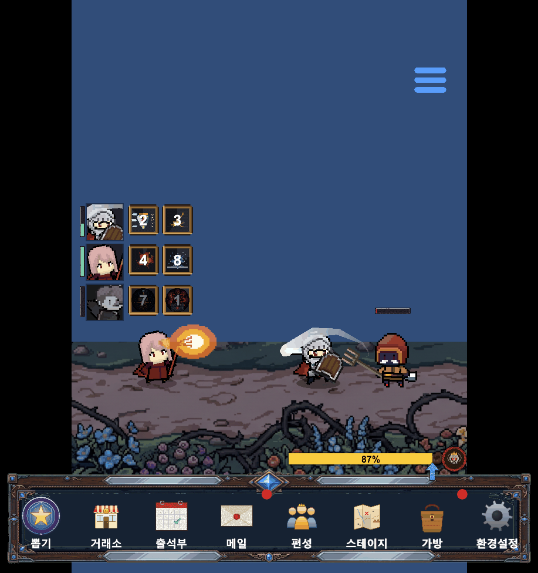
| 어디에 | 무엇이 | 이렇게 보세요 |
|---|---|---|
| 왼쪽 위 | 얼굴 + 체력 막대 | 파티원의 얼굴이에요. 옆의 세로 막대가 체력이고, 맞으면 붉게 번쩍이며 흔들려요. 쓰러지면 얼굴이 흑백으로 굳어요. |
| 왼쪽 | 스킬 칸 | 캐릭터가 쓰는 스킬이에요. 칸에 뜬 숫자는 다시 쓸 수 있기까지 남은 초예요. 마우스를 올리면 설명이 나와요. |
| 아래 | 진행 바 | 지금 스테이지를 얼마나 깼는지 알려 줘요. 100%가 되면 보상이 뜨고 다음 스테이지로 넘어가요. |
| 아래 | 메뉴 8개 | 뽑기 · 거래소 · 출석부 · 메일 · 편성 · 스테이지 · 가방 · 환경설정이에요. 항상 떠 있으니 따로 펼칠 필요 없이 바로 누르면 돼요. |
버튼에 빨간 점이 붙었다면 받아 갈 것이나 쓸 수 있는 것이 있다는 뜻이에요. 메일에 안 받은 보상이 있거나, 쓰지 않은 스킬 포인트가 남아 있을 때 붙어요.
보상을 얻으면 아이템이 아래 가방 버튼으로 날아 들어가는 모습이 보여요. 무엇이 들어왔는지는 가방을 열어 확인하면 돼요.
05
직업은 기사 · 레인저 · 마법사 · 슬레이어 네 가지예요. 공격 사거리가 서로 달라서, 파티에 넣으면 가까이서 싸우는 직업이 앞에, 멀리서 쏘는 직업이 뒤에 자동으로 정렬돼요.
| 직업 | 한마디로 | 서는 자리 | 체력 | 공격력 | 방어력 | 치명타 | 공격 주기 |
|---|---|---|---|---|---|---|---|
| 기사 | 가장 튼튼한 방벽 | 맨 앞 | 1,300 | 10 | 12 | 5% | 1.20초 |
| 레인저 | 가장 빠른 연사 | 뒤 | 540 | 16 | 7 | 10% | 0.90초 |
| 마법사 | 느리지만 전부 광역 | 뒤 | 470 | 16 | 5 | 8% | 1.50초 |
| 슬레이어 | 치명타로 몰아치는 딜러 | 앞~중간 | 860 | 15 | 11 | 12% | 1.10초 |
체력이 1,300으로 다른 직업의 1.5~2.8배예요. 무리 한가운데 서서 공격을 대신 받아 주는 역할이에요. 대신 평타 공격력은 네 직업 중 가장 낮아요 — 기사는 적을 빨리 죽이는 직업이 아니라 버티면서 밀고 나가는 직업이에요. 화력은 평타가 아니라 광역 스킬에서 나와요.
| 스킬 | 쿨타임 | 무슨 일이 벌어지나요 |
|---|---|---|
| 방패 돌진 | 8초 | 뒤로 크게 도약했다가 앞으로 부딪혀요. 방패에 닿은 앞쪽 적 전부가 피해를 입고 함께 날아가요. |
| 강타 | 6초 | 내려쳐서 주변 적을 한꺼번에 때려요. 바닥에 자국이 남아요. |
| 기사의 분노 | 15초 | 5초 동안 자기 공격력을 크게 올려요. |
패시브 — 강철 피부(방어력) · 불굴(최대 체력) · 응징(공격력)
공격 주기가 0.9초로 가장 빨라요. 사거리도 길어서 뒷줄에서 안전하게 화살을 넣어요. 한 번에 여러 적을 쓸어 담는 쪽은 아니지만, 한 마리를 빨리 녹이는 데는 가장 강해요.
| 스킬 | 쿨타임 | 무슨 일이 벌어지나요 |
|---|---|---|
| 정조준 사격 | 5초 | 화살이 날아가는 길에 있는 적을 모두 꿰뚫어요. |
| 다중 사격 | 7초 | 한 번에 여러 발을 쏴서 앞의 적에게 몰아 넣어요. |
| 화살비 | 10초 | 하늘로 뛰어올라 넓은 범위에 화살을 퍼부어요. |
패시브 — 민첩(이동속도) · 매의 눈(치명타 확률) · 치명 훈련(치명타 피해)
공격 주기 1.5초로 가장 느린 대신, 스킬 세 개가 모두 여러 마리를 동시에 때려요. 적이 우르르 몰려나오는 구간에서 특히 시원해요. 몸이 가장 약하니 앞을 막아 줄 동료와 함께 두는 게 좋아요.
| 스킬 | 쿨타임 | 무슨 일이 벌어지나요 |
|---|---|---|
| 파이어볼 | 4초 | 화염구가 뻗어 나가며 닿은 적을 모두 태워요. |
| 라이트닝 볼트 | 6초 | 번개가 적들을 관통하고 화면이 번쩍여요. |
| 프로스트 노바 | 9초 | 얼음이 닿은 적을 3초간 얼려서 발을 묶어요. 피해는 낮지만 위험한 순간을 넘기게 해 줘요. |
패시브 — 마력 집중(공격력) · 예지(방어력) · 원소 폭발(공격력)
치명타 확률이 12%로 가장 높아요. 기사만큼 단단하지는 않지만 원거리 직업보다는 잘 버텨서, 기사 뒤나 옆에서 화력을 담당해요. 맞으면 아프지만 먼저 죽인다는 성격이에요.
| 스킬 | 쿨타임 | 무슨 일이 벌어지나요 |
|---|---|---|
| 내려찍기 | 7초 | 솟구쳐 올랐다가 내리찍어요. 착지한 자리에 피해가 퍼지고 바닥 자국이 남아요. |
| 강한일격 | 9초 | 도끼를 크게 휘둘러 주변의 적을 모두 베어요. |
| 광전사의 힘 | 14초 | 자기 체력을 대가로 6초간 공격 속도와 흡혈을 얻어요. 잃은 체력은 때리면서 되찾아요. |
패시브 — 살육 본능(공격력) · 유혈(치명타 피해) · 무자비(치명타 확률)
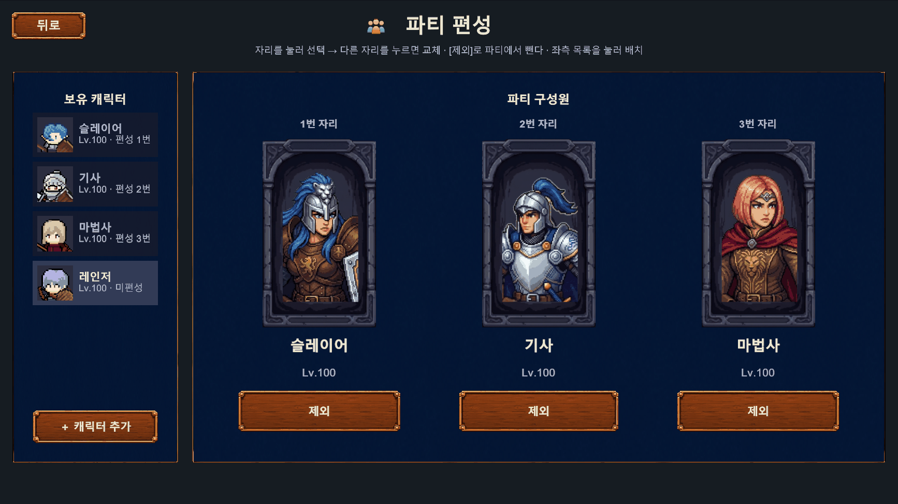
편성은 곧 전투 대형이에요. 앞에서 버텨 줄 기사 한 명과, 뒤에서 때려 줄 딜러의 조합을 생각해 보세요.
06
파티가 오른쪽으로 나아가다 적을 만나면 교전해요. 평타는 공격 주기마다, 스킬은 쿨타임이 차면 자동으로 나가요.
정해진 수의 적을 처치하면 보상(경험치 · 골드 · 전리품)이 뜨고 가방으로 날아 들어가요.
각 지역의 10 스테이지는 보스전이에요. 등장 전에 경고가 뜨고, 보스는 머리 위 왕관과 따로 있는 체력 막대로 알아볼 수 있어요.
레벨이 오르면 능력치가 올라가고 스킬 포인트가 들어와요. 포인트가 남아 있으면 가방 버튼에 빨간 점이 붙어요.
파티가 전멸하면 잠시 뒤 다시 도전해요. 잃는 것은 없으니 편하게 두고 보셔도 돼요.
접속을 끊은 동안의 성과는 다시 들어올 때 오프라인 보상으로 정산돼 지급돼요.
같은 자리에서 계속 전멸한다면 무리해서 밀지 말고, 키우는 순서의 체크리스트를 한 번 훑어보세요. 장비 · 강화 · 스킬 · 룬 중 하나가 비어 있는 경우가 대부분이에요.
07
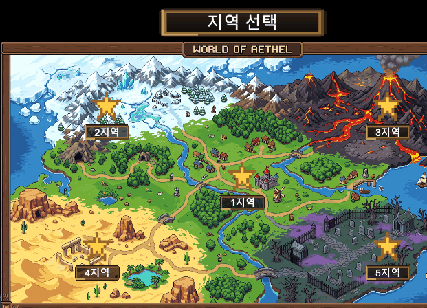
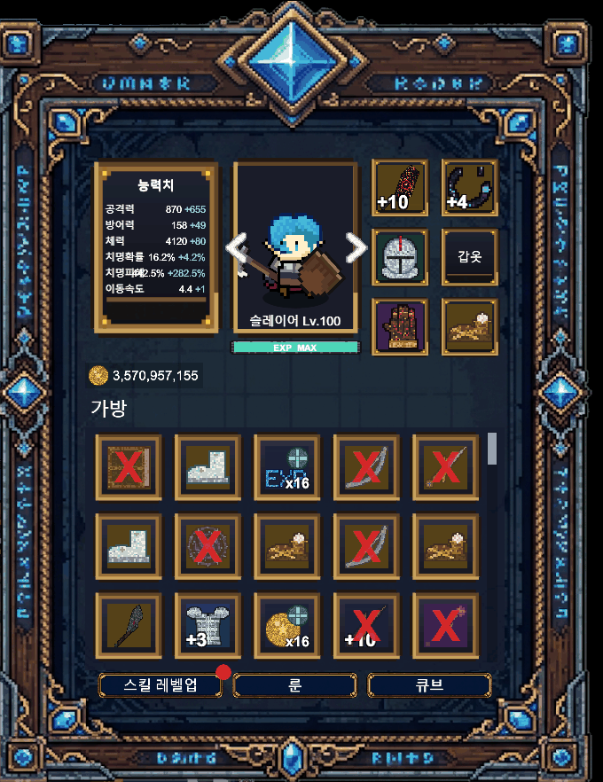
아이템 등급은 다섯 단계이고, 칸 배경색으로 한눈에 구분돼요.
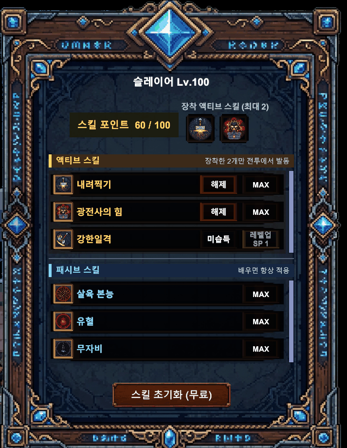
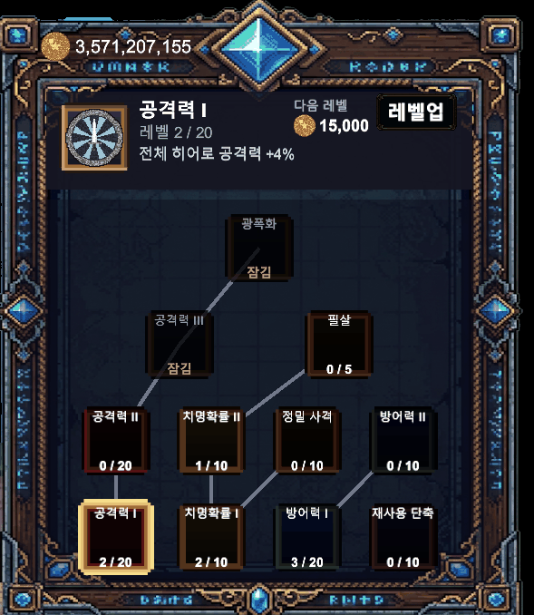
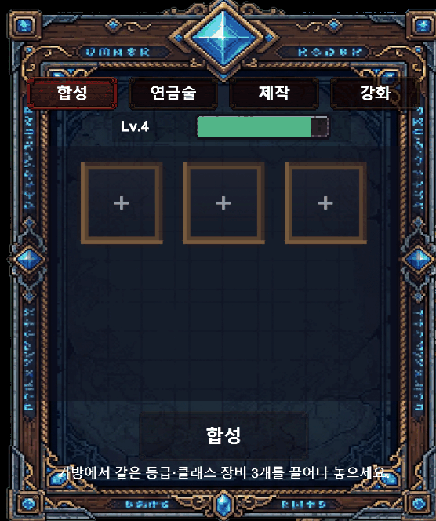
| 탭 | 여기서 하는 일 |
|---|---|
| 합성 | 같은 등급 · 같은 직업 장비 3개를 넣어 한 단계 위 등급 장비로 바꿔요. |
| 연금술 | 필요 없는 아이템을 분해해서 재화와 재료로 바꿔요. |
| 제작 | 모은 재료로 레시피에 맞는 아이템을 만들어요. |
| 강화 | 장비를 +10까지 강화해요. 단계가 오르면 옵션이 커지고, 무기는 잔상 색과 불꽃이 점점 화려해져요. |
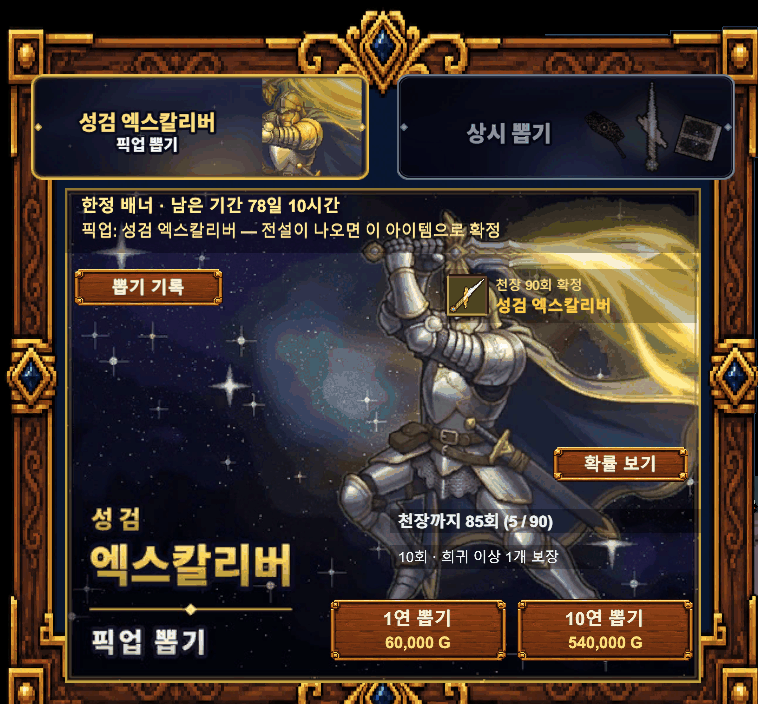
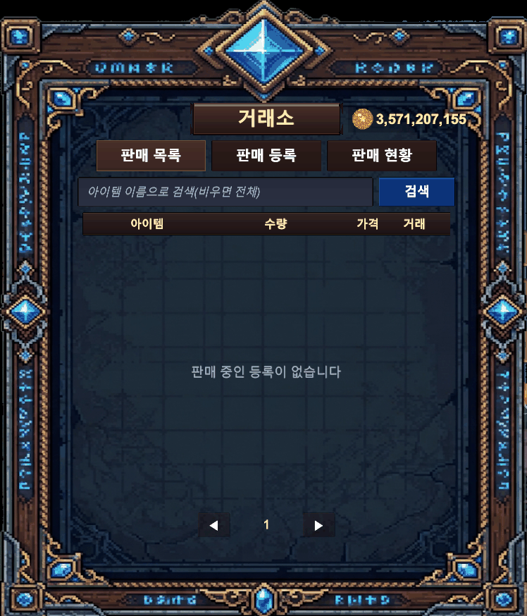
| 탭 | 여기서 하는 일 |
|---|---|
| 판매 목록 | 다른 사람이 올린 매물을 찾아서 사요. |
| 판매 등록 | 내 아이템에 가격을 붙여서 올려요. |
| 판매 현황 | 내가 올린 매물이 팔렸는지 보고, 안 팔린 것은 회수해요. |
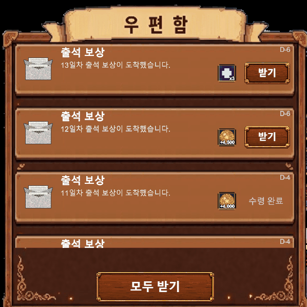
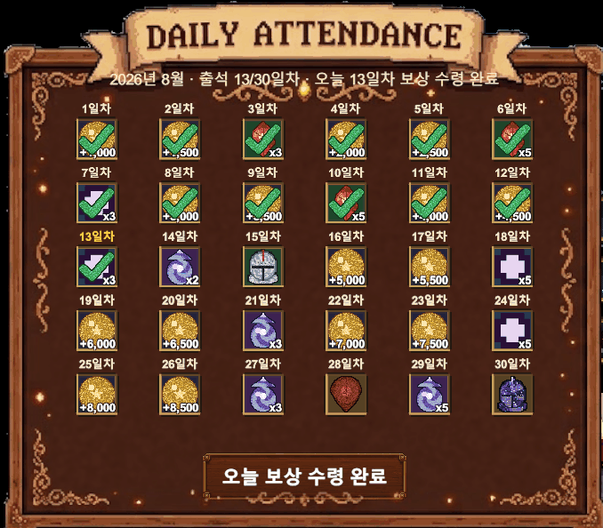
08
아래 순서대로 돌리면 헤매지 않아요. 8번까지 오면 다시 1번으로 돌아가는 순환이에요.
스테이지를 진행해요. 경험치 · 골드 · 전리품이 계속 쌓여요. 방치의 기본이에요.
얻은 장비를 바로 입혀요. 파티 전원의 6부위를 채우는 것이 가장 빠른 성장이에요.
레벨업으로 받은 스킬 포인트를 써요. 액티브 2개를 장착하는 것도 잊지 마세요.
남는 장비는 큐브로 돌려요. 합성으로 등급을 올리거나, 분해해서 재료로 바꿔요.
무기부터 강화해요. 같은 자원을 써도 체감이 가장 큰 곳이 무기예요.
골드가 남으면 룬을 올려요. 계정 공용이라 파티 전원이 한 번에 세져요.
출석부와 우편함을 비워요. 재화와 재료를 공짜로 보충할 수 있어요.
강해졌으면 다음 지역과 난이도로. 그리고 다시 1번으로.